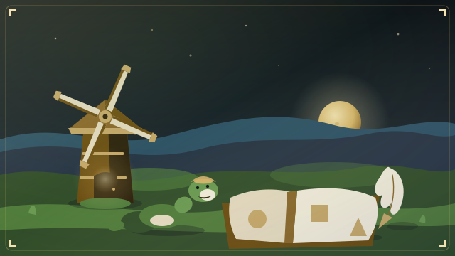
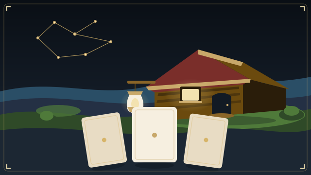
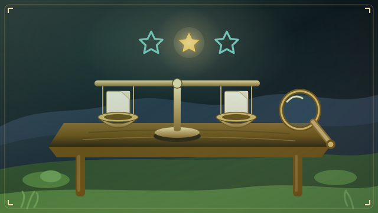
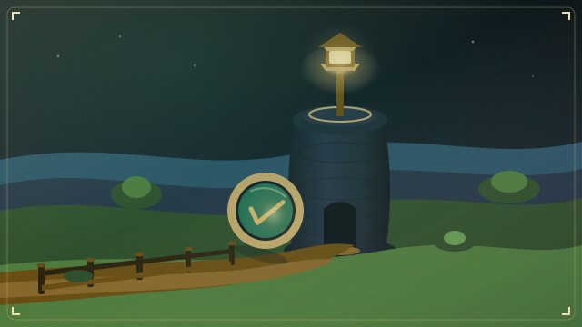
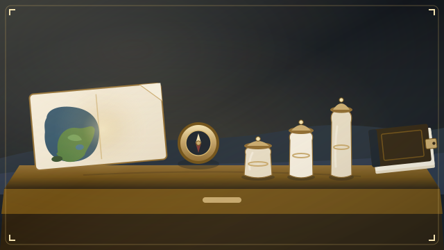

Four exploration games, one journey
Learn by exploring
Walk a painted map, meet teachers, face gatekeepers, write Python and open chests. XP, streaks and badges save in this browser only and are never sent anywhere.
The AI safety path, in order

Python Basics
Start here if you have not coded before. Values, lists, loops, functions, dictionaries and fixing code, with live examples you can edit.

AI Foundations
Data, neural networks, transformers, fine-tuning and human feedback, with Python.

AI Evaluation Skills
Test cases, graders, statistics, judges and validity, with Python.

AI Safety
Alignment basics, red-teaming, dangerous-capability evals, robustness, interpretability and policies, with Python. Includes a reading and community list.
The order is a suggestion, not a lock: every world is open. Python tasks run in your browser using the Pyodide engine, downloaded from a public CDN the first time (about 10 MB), so they need an internet connection. Each later task has "Python ideas used here" buttons that reopen the matching Python Basics lesson.
Separate topic

Portfolio GuideA separate map about cash, size and hedges. It sits beside the path, not on it.General education only, not career, financial or investment advice. Styled after the Pocket Reserve design language.